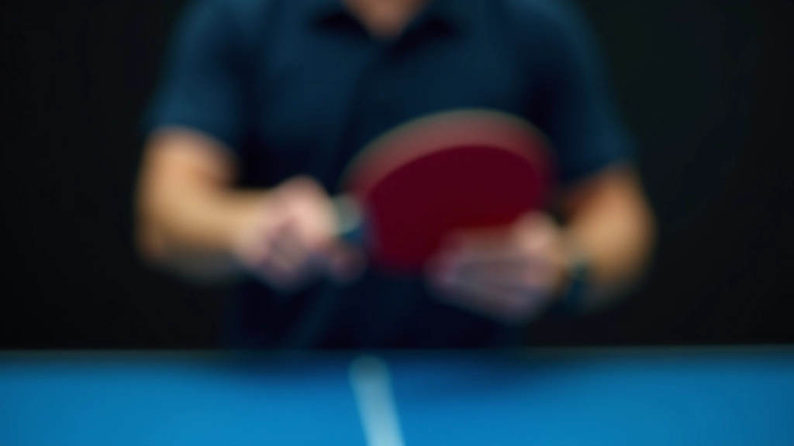
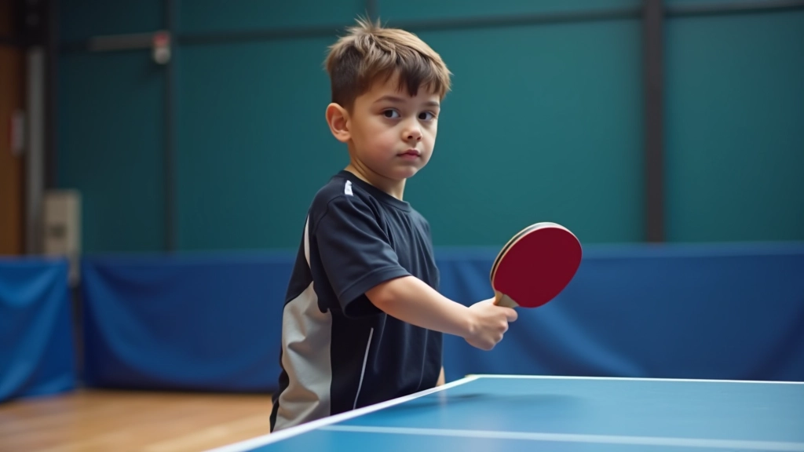
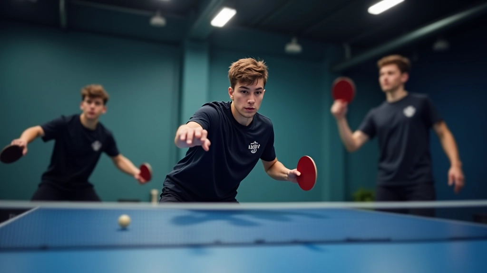
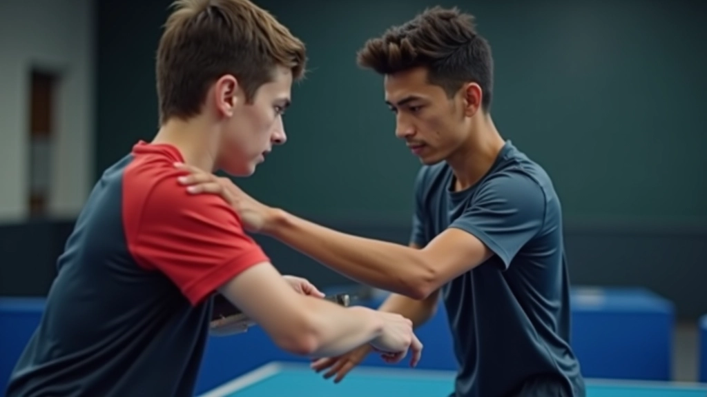

تطوير الضربات الأمامية والخلفية
يغطي هذا الدليل تقنيات الضربات الأساسية وكيفية ممارستها بفعالية. تشمل التدريبات...
الإمساك الصحيح والوقفة المتوازنة هما أساس كل حركة ناجحة في تنس الطاولة. في هذا الدليل، نشرح كيفية إتقان هذه الأساسيات منذ البداية.


فريق التحرير والمراجعة
كتبها فريق أكاديمية النجم التحريري، متخصص في تقديم إرشادات عملية وسهلة الفهم حول تطوير الناشئين في تنس الطاولة.
هناك خطأ شائع يرتكبه الكثير من المبتدئين: يركزون على الحركات السريعة والضربات القوية قبل إتقان الأساسيات. لكن الحقيقة أن كل شيء يبدأ من هنا. الإمساك والوقفة ليستا مملتين أو ثانويين — إنهما المؤسسة التي تُبنى عليها كل مهاراتك الأخرى.
إذا أمسكت بالمضرب بشكل خاطئ، ستشعر بعدم الاستقرار. وستجد نفسك تعوضين بحركات غير فعالة. نحن نرى هذا كل يوم في الأكاديمية. لكن الخبر الجيد؟ إصلاح الإمساك يستغرق بضعة أسابيع فقط من التدريب المنتظم.
هناك نوعان رئيسيان من الإمساك المستخدمة في تنس الطاولة: الإمساك بقبضة اليد المفتوحة (Penhold) والإمساك الأوروبي (Shakehand).
الإمساك الأوروبي هو الأكثر شيوعاً بين الناشئين. تمسكين المضرب كما لو كنتِ تصافحين شخصاً ما — إصبع الإبهام على جانب واحد وأصابع الأخرى على الجانب الآخر. هذا الإمساك يعطيك مرونة عالية للتحرك بين الضربة الأمامية والخلفية بسهولة.
نصيحة مهمة: الإمساك يجب أن يكون متوسط الحزم. ليس محكماً جداً (سيشعر بالإرهاق) ولا رخواً جداً (ستفقدين السيطرة). تخيلي أنك تمسكين بيضة — تريدينها آمنة، لكن بدون أن تحطيها.


الوقفة الصحيحة تعني أن تكوني في موضع يسمح لك بالحركة السريعة في أي اتجاه. القدمان يجب أن تكونا متباعدتين بمسافة تقريباً بعرض الأكتاف. الوزن موزع بالتساوي على كلا القدمين، مع أن تكون على الكرات (أصابع القدم) وليس على الأعقاب.
الركبتان ينبغي أن تكونا منحنيتين قليلاً دائماً — لا تقفي بشكل مستقيم تماماً. هذا الانحناء الطفيف يعطيك الاستعداد للحركة الفورية. الظهر مستقيم والعينان مركزتان على الكرة والخصم.
التمرينات المنتظمة هي السبيل الوحيد لتثبيت هذه العادات. لا تتوقعي أن تصبح طبيعية بعد جلسة واحدة. نحن نتحدث عن ٣ إلى ٤ أسابيع من التكرار المستمر حتى تشعري أن الوقفة والإمساك أصبحا تلقائياً.
أمسكي بالمضرب بالإمساك الأوروبي الصحيح لمدة ٥ دقائق يومياً. لا تضربي الكرة — فقط احافظي على الإمساك والشعور به.
قفي بالوقفة الصحيحة ثم تحركي جانباً ذهاباً وإياباً. تحركي ببطء أولاً، ثم زيدي السرعة. الهدف هو الشعور بالتوازن أثناء الحركة.
ابدئي بضرب كرات بطيئة مع الحفاظ على الوقفة والإمساك الصحيحين. ركزي على الشكل، لا على القوة أو السرعة.


في الأكاديمية، نرى نفس الأخطاء مراراً وتكراراً. الخبر الجيد أن معظمها سهل التصحيح إذا لاحظتِه مبكراً.
يؤدي هذا إلى إرهاق الذراع والمعصم. ستشعرين بألم بعد فترة قصيرة. الحل: استرخي قليلاً. الإمساك يجب أن يكون آمناً لكن لين.
هذا يجعلك بطيئة وغير متوازنة. تحركي على كرات القدمين دائماً. ستشعرين بالفرق فوراً في سرعة حركتك.
لا يسمح هذا برد فعل سريع. ابقي الركبتين منحنيتين قليلاً دائماً، حتى عندما تكونين في الانتظار.
إتقان الإمساك والوقفة ليس مثيراً للإثارة كما هو الحال مع تعلم ضرب قوية. لكنه أساسي. تماماً كما لا تبني منزلاً على أساس ضعيف، لا تبني مهاراتك في تنس الطاولة على وقفة وإمساك خاطئين.
المفتاح هو الاتساق. خذي ١٠ دقائق يومياً لتصحيح هذه الأساسيات. بعد ٤ أسابيع، ستجدين أن الحركات الأخرى أسهل بكثير. ستشعرين بمزيد من السيطرة والثقة. وهذا هو بالضبط ما نسعى إليه هنا في الأكاديمية.
تنبيه مهم: هذا الدليل مخصص للأغراض التعليمية فقط. كل لاعب مختلف، والتقنيات قد تختلف قليلاً بناءً على احتياجات الفرد. يُنصح دائماً بالعمل مع مدرب متخصص لتقييم تقنيتك الشخصية والحصول على تصحيحات مخصصة لك. إذا كان لديك أي إصابات أو مشاكل جسدية، استشيري طبيباً قبل بدء أي برنامج تدريبي جديد.
يغطي هذا الدليل تقنيات الضربات الأساسية وكيفية ممارستها بفعالية. تشمل التدريبات...

الحركة السريعة والمتوازنة ضرورية في تنس الطاولة. تعرف على التمارين التي تطور سرع...

تنس الطاولة ليست فقط عن المهارات التقنية، بل أيضاً عن القراءة الذكية للخصم. اكتش...